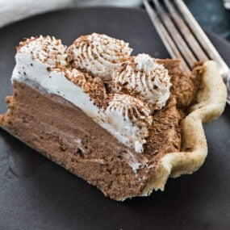

Home
Cookbook
Movie-Showcase
Playlist
Easy Delicious Recipes
Air Fryer Churro Bites
Chicken Mozzerella Wraps
Funnel Cake
French Silk Pie
Air Fryer Churro Bites

Author:Molly Brown
Total Time: 30-45 Minutes
Ingridients
Dough
- 1 large egg.
- 1 tsp vanilla essence.
- 1 cup plain flour.
- 1/3 cup + 1 tbsp unsalted butter.
- 1 cup water.
- 2 tbsp sugar.
- 1 tsp salt.
Coating
- 1 tbsp cinnamon powder.
- 1 cup white sugar.
Instructions
-
In a pan, combine water, butter, salt, and sugar. Bring the
mixture to a boil over high heat. Once boiling, reduce the heat
and gradually add in the flour, stirring continuously until the
dough comes together smoothly. Turn off the heat and remove the
pan from the stove.
-
Transfer the dough from the pan into a large mixing bowl and let
it cool down for about 4-5 minutes. Once slightly cooled, add
in the egg and vanilla extract. Use an electric hand mixer to
thoroughly combine the ingredients until a smooth mixture is
achieved.
-
Transfer the churro dough into a piping bag. Preheat your air
fryer to 375°F (190°C). Spray the air fryer basket with a
neutral nonstick cooking spray, such as coconut oil spray.
Carefully pipe bite-sized churros into the basket, ensuring not
to overcrowd them. For variation, you can also drop the dough by
the spoonful into the basket.
-
Lightly brush some butter on top of the churros and cook them in
the air fryer for 10-12 minutes until they turn golden brown.
Depending on the size of your air fryer, you may need to work in
several batches to cook all the churros evenly.
-
In a shallow bowl, mix together sugar and cinnamon powder. Once
the churros are cooked, transfer them directly into the cinnamon
sugar mixture. Toss them gently to ensure they are evenly
coated. If needed, brush the churros with some melted butter
(or spray them with water or nonstick cooking spray) before
rolling them in the cinnamon sugar to help the mixture adhere
better.
-
Enjoy your churros warm, served alongside your choice of dips
such as chocolate syrup, honey, or Nutella. These bite-sized
churros are perfect for a sweet indulgent snack!
Serve and Enjoy!
Air Fryer Churro Bites
Chicken Mozzerella Wraps
Funnel Cake
French Silk Pie
Chicken Mozzerella Wraps.

Author: Kimberly Robinson
Total Time: 25 Minutes
Ingridients
- 2 large chicken breasts Approximately 1 pound total.
- 1 teaspoon garlic powder.
- 1 teaspoon paprika.
- ½ teaspoon salt.
- ½ teaspoon black pepper.
- 4 whole wheat tortillas.
- 1 cup shredded mozzarella cheese.
- 1 cup fresh spinach leaves.
Instructions
-
Cut the chicken breasts into thin strips. In a mixing bowl,
combine the garlic powder, paprika, salt, and black pepper. Add
the chicken strips to the bowl and toss to coat evenly with the
seasoning.
-
Preheat the air fryer to 375°F (190°C) for about 3-5 minutes.
-
Spray the air fryer basket with cooking spray. Place the
seasoned chicken strips in a single layer in the basket. Cook
for 8 minutes, flipping halfway through, until the chicken is
golden brown and cooked through.
-
Remove the cooked chicken from the air fryer. On each tortilla,
place a layer of fresh spinach, followed by a generous amount of
shredded mozzarella cheese, and the cooked chicken strips.
-
Roll the tortillas tightly to enclose the filling. Spray the
outside of each wrap lightly with olive oil spray. Place the
wraps in the air fryer basket seam-side down.
-
Air fry the wraps at 375°F (190°C) for an additional 2-3
minutes, or until the tortillas are crispy and golden.
-
Remove the wraps from the air fryer and let them cool slightly.
Slice each wrap in half and serve with ranch dressing if
desired.
Serve and Enjoy!
Air Fryer Churro Bites
Chicken Mozzerella Wraps
Funnel Cake
French Silk Pie
Funnel Cake.

Author: Sam Merritt
Total Time: 15 Minutes
Ingridients
- 2 cups (250 g) all-purpose flour.
- 2 Tablespoons granulated sugar.
- 1 teaspoon baking powder.
- ½ teaspoon salt.
- 1 cup (236 ml) whole milk.
- 2 large eggs lightly beaten.
- ½ teaspoon vanilla extract.
- Vegetable oil for frying.
- Powdered sugar.
Instructions
-
In a medium-sized bowl, whisk together flour, sugar, baking
powder, and salt until well-combined.
-
In a separate bowl, whisk together milk, eggs, and vanilla
extract (if using) until well-combined.
-
While whisking, gradually add dry ingredients to wet, stirring
until mixture is smooth and combined. Set aside.
-
Fill a medium-sized saucepan 2-3” deep with vegetable oil. Set
on stovetop over medium-low heat and place a candy thermometer
in the oil (make sure the tip of the thermometer is in the
middle of the oil and not touching the bottom or it will read
hotter than the actual temperature of the oil). Heat oil to
370-375F (187-190C).
-
Once oil is heated, portion about ⅓ – ½ cup of batter into a
liquid measuring cup. Slowly drizzle batter into oil in a thin
stream, swirling and criss-crossing the batter over itself. Fry
on each side until golden brown (about 90 seconds per side) then
remove to a paper-towel lined plate.
-
Dust with powdered sugar and serve warm.
-
Repeat with remaining batter but make sure that oil returns to
temperature in between batches.
Serve and Enjoy!
Air Fryer Churro Bites
Chicken Mozzerella Wraps
Funnel Cake
French Silk Pie
French Silk Pie.

Author: Bill Parisi
Total Time: 2hr 51Minutes
Ingridients
Crust
- 1 ½ cups all-purpose flour.
- 1 stick of unsalted butter.
- pinch of sea salt.
- 2 teaspoons of sugar.
- ¼ cup of ice cold water.
Filling
- 3 cups of heavy whipping cream.
- ½ cup of sugar + 2/3 more.
- 1 cup of unsalted butter.
- 2 teaspoons vanilla extract.
- 4 ounces semi-sweet chocolate.
- 4 large eggs.
Instructions
Crust
-
Preheat the oven to 450°. If using convection, preheat it to
425°.
-
Add the flour, butter, salt, and sugar to a food processor and
pulse on high speed while drizzling in the water until it
becomes like a meal. Note: you may need a bit more water.
-
Transfer the dough to a clean surface dusted with flour, knead
to form a ball, and then roll it out with a pin until it is 1/8
thick.
-
Form the dough into a 9” pie pan, cutting off any excess and
crimping the edges to make a ripple around the outside.
-
Add a piece of parchment paper over the pie crust, pour some
dried beans over the parchment paper, and par-bake for 6 to 8
minutes. The pie crust will not change much color but will
become firm once cooled after baking.
-
Remove from the oven and cool completely to room temperature.
Filling
-
Add the heavy cream and ½ cup of sugar to a standing mixer with
the whisk attachment and whisk on high speed until stiff peaks
have formed, which takes about 3 to 5 minutes.
-
Set 1/3 of the whipped cream into a separate container, but
chill both the 1/3 and 2/3 in the refrigerator until it’s time
to use it.
-
Add the chocolate to a microwave-safe bowl and heat for 1
minute. Stir and return to the microwave for 30 seconds. Stir
and return to the microwave for 30 more seconds. At this point,
it should be melted. Cool slightly to room temperature, which
only takes 4 to 5 minutes.
-
Add the butter and sugar to a standing mixer with the paddle
attachment and mix on high speed until the butter becomes light
and fluffy, which takes about 5 minutes.
-
Mix in the vanilla extract and then the melted chocolate.
-
Next, add 2 eggs and beat for 2 minutes before adding in the
other 2 eggs. Beat for a further 3-4 minutes or until smooth
and fluffy.
-
Fold in the chilled 1/3 cup of whipped cream using a rubber
spatula until it has been mixed in.
-
Transfer the filling to the par-baked pie crust and smooth out
using a spoon or spatula.
-
Chill in the refrigerator for at least 2 hours or until the pie
has settled and is firm.
-
Top off with the remaining chilled whipped cream and add an
optional garnish of shaved chocolate.
Serve and Enjoy!